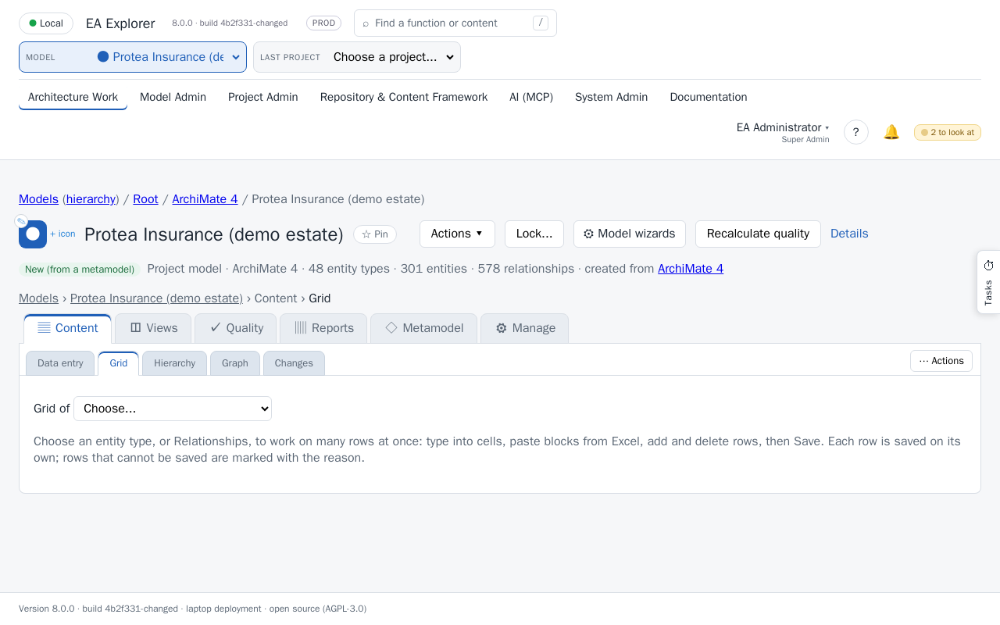

Set up a grid column
For: Practising architects
Rename, hide, filter or sort a column of the grid.

#/metamodel/{m}/gridWhy do this
A type can have many attributes, and most jobs need only a few. Renaming, hiding, filtering and sorting columns makes the grid fit the job in front of you (all applications missing an owner, sorted by cost), and your layout is remembered for next time.
Content work is the everyday heart of architecture: recording what exists and what should, and how it all connects. EA Explorer checks it against the metamodel as you go and keeps it as your change until it is reviewed.
In TOGAF terms: Phases B, C and D: recording the building blocks and relationships of the baseline and target architectures. See EA Explorer and the TOGAF Standard.
The goal: The grid shows what you need, the way you need it.
Steps
- Open the model's Grid and click a column's header.
- Rename, hide, filter or sort it.
- Your columns are kept for you.